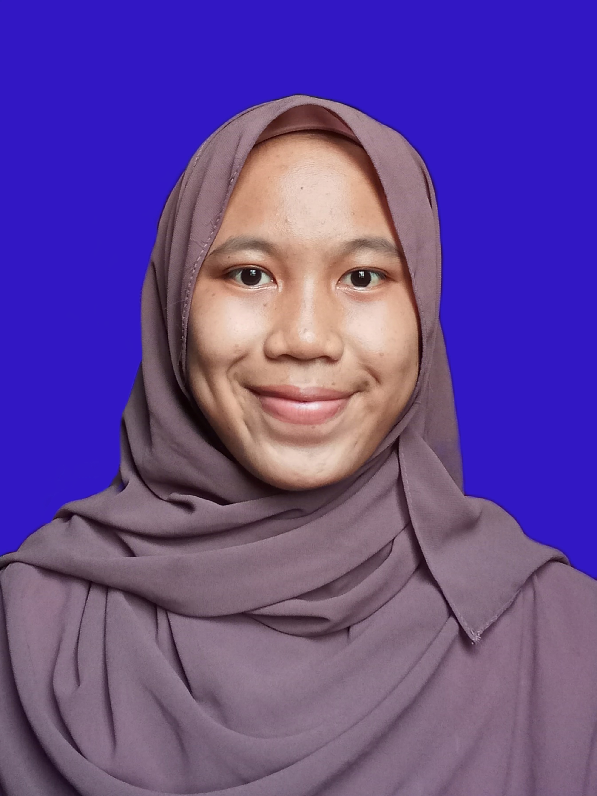

My Curiculum Vitae

Tentang Saya
Saya adalah seorang mahasiswa aktif jenjang S-1 asal Lebak, Banten di Universitas Pendidikan Indonesia jurusan Sistem Informasi Kelautan.
Saya tertarik dengan kelautan terutama dalam aspek ekologi dan biologi lautnya. Saya mampu bekerja dengan baik secara mandiri maupun bekerja sama dengan tim.
Biodata Diri
- Nama : Neng Evi Ratna
- Tempat, Tanggal Lahir : Lebak, 26 Januari 2002
- Jenis Kelamin : Perempuan
- Agama : Islam
- Alamat : Kp. Sukasari RT 001 RW 004 Des. Sukajadi Kec. Panggarangan Kab. Lebak Prov. Banten
- Telepon : 081517239715
- Email : nengeviratna01@upi.edu
- Instagram : neng_evi_ratna
Riwayat Pendidikan
- 2008-2014 MI AL-ITTIHAD CIMANGPANG
- 2014-2017 SMPN 1 PANGGARANGAN
- 2017-2020 SMAN 1 PANGGARANGAN
- 2020-Now S-1 Sistem Informasi Kelautan Universitas Pendidikan Indonesia
Pengalaman Organisasi
- 2018-2019 Bendahara II OSIS SMAN 1 PANGGARANGAN
- 2019-2020 Sekertaris Pramuka SMAN 1 PANGGARANGAN
- 2021 Panitia ASRAMA CERIA HIMATASKA
- 2021 Panitia Webinar Maritim Muda Banten
Kemampuan
- Microsoft Office
- Filmorago
- Canva
Projek Terakhir
- 2021 Web Gis Daerah Potensial di Kota Serang